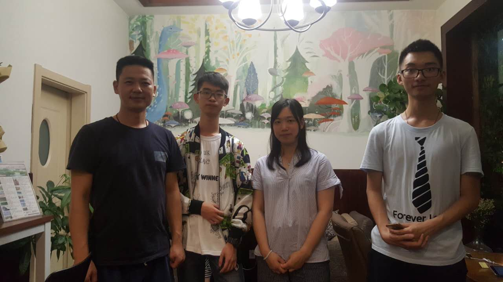
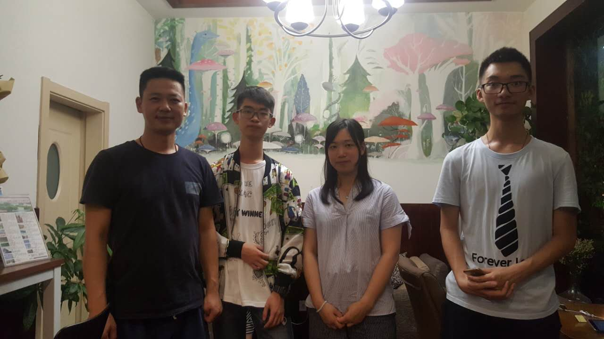

悠然小谷 风微浪稳
Jun 24 2017
7月24日下午，我们一行人来到了青芝坞的民宿——悠然小谷▪微风，对其店主展开了采访。
悠然小谷是一家已经建成两年的民宿，外墙由竹条树枝装饰，门前有着两个秋千，外观以自然淳朴风格为主，内部装修秉承着外部自然农庄的风格，瓶饰座椅外观简约而不失典雅。
 在店外，团队成员遇见了正在休息的老板，这位老板很和善，和他相谈甚欢，并邀请我们进店参观，店主向我们分析了青芝坞一带民宿发展快速的原因，相比杭州其他地区，青芝坞距离西湖风景区很近，且位于体育馆周边同时交通便利，相当于杭州的城中村。此外老板本人十分感谢政府对于民宿发展的大力扶持，多项便利政策帮助他能够快速办证经营。接着我们询问了店主有关消防与安保措施。了解到现在民宿的安全措施都是酒店的标准，在G20峰会后杭州的各方面治安发展的相当完善，同时在青芝坞街道上也有着24小时的保安值班巡逻。而后我们从老板处得知来悠然小谷的客人大多都是30岁以下的，可能与民宿自然的风格有关。最后我们了解到青芝坞的别墅由于其高昂的租金，大都是租赁给民宿的店主的。

紧接着我们一行人来到青芝坞的街上，向街上正在值班的保安进行了细致的采访，了解到青芝坞的保安会在街上24小时巡逻，如果遇到突发的治安事件，他们会及时报警联系附近公安。青芝坞的保安主要负责街道上的交通与停车问题。保安的工作是轮班制，并且每天负责不同区域。团队成员从保安处了解到由于比邻的植物园赏梅季开始，青芝坞的车流量从每年的9月中旬以后增多，车辆多来自于附近江浙沪一带。
调研民宿从体验入手，经过前一天的入住体验后，团队成员对同一街道的周边进行采访对比，了解到更多的有关民宿信息。民宿的发展和环境，政策，经营密不可分，政策促进了民宿行业的欣欣向荣，环境造就了青芝坞地区的蓬勃发展，每一家店的用心经营造成了如今的成功。民宿的成功让我们真切的体会到，成功天时地利人和缺一不可。
在店外，团队成员遇见了正在休息的老板，这位老板很和善，和他相谈甚欢，并邀请我们进店参观，店主向我们分析了青芝坞一带民宿发展快速的原因，相比杭州其他地区，青芝坞距离西湖风景区很近，且位于体育馆周边同时交通便利，相当于杭州的城中村。此外老板本人十分感谢政府对于民宿发展的大力扶持，多项便利政策帮助他能够快速办证经营。接着我们询问了店主有关消防与安保措施。了解到现在民宿的安全措施都是酒店的标准，在G20峰会后杭州的各方面治安发展的相当完善，同时在青芝坞街道上也有着24小时的保安值班巡逻。而后我们从老板处得知来悠然小谷的客人大多都是30岁以下的，可能与民宿自然的风格有关。最后我们了解到青芝坞的别墅由于其高昂的租金，大都是租赁给民宿的店主的。

紧接着我们一行人来到青芝坞的街上，向街上正在值班的保安进行了细致的采访，了解到青芝坞的保安会在街上24小时巡逻，如果遇到突发的治安事件，他们会及时报警联系附近公安。青芝坞的保安主要负责街道上的交通与停车问题。保安的工作是轮班制，并且每天负责不同区域。团队成员从保安处了解到由于比邻的植物园赏梅季开始，青芝坞的车流量从每年的9月中旬以后增多，车辆多来自于附近江浙沪一带。
调研民宿从体验入手，经过前一天的入住体验后，团队成员对同一街道的周边进行采访对比，了解到更多的有关民宿信息。民宿的发展和环境，政策，经营密不可分，政策促进了民宿行业的欣欣向荣，环境造就了青芝坞地区的蓬勃发展，每一家店的用心经营造成了如今的成功。民宿的成功让我们真切的体会到，成功天时地利人和缺一不可。